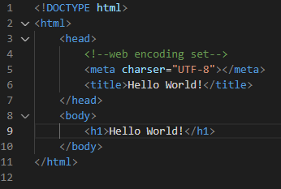
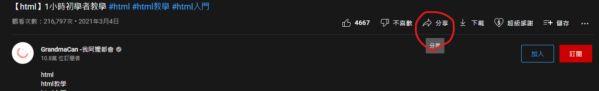
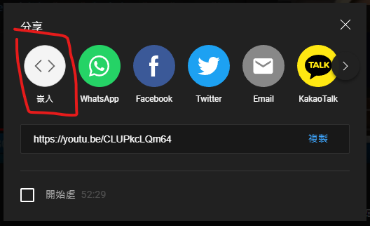
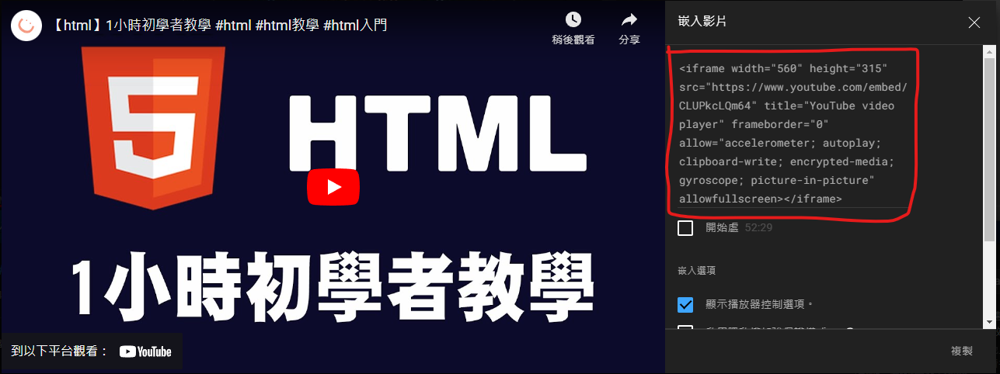

Hello World!
這是一個網頁初學者學習的過程。
影片參考
【html】1小時初學者教學
第一章 基本標籤介紹
1. <head>用於設定網頁資訊
1.1 <meta charser="UTF-8">用於設定編碼方式
1.1 <title>用於設定網頁標題
2. <body>用於設定網頁內容
2.1 <h1><h2><h3>用於設定標題
2.2 <p>用於設定內文
2.2.1 <b>用於設定
粗體
2.2.2 <i>用於設定
斜體
2.3 <br>用於設定內文換行
2.4 <hr>用於設定水平線
第二章 連結、圖片
1. 透過<a href="URL">即可設置連結至其他網站，如
第二頁
。
1.1 如果是透過連結到同資料夾其他html，則可以直接新增黨名。
1.2 如果是透過連結到其他html，則新增相對路徑，如"
dir/page3.html
"。
1.2.1 若要連結前面資料夾可新增"../index.html"。
1.3 圖片同樣透過<a href="image path">放入連結;，如
圖片
2. 透過<img src="URL">新增圖片。
2.1 可以新增外部網站的連結。
2.1 同樣也可以新增自己所準備的圖片。

2.1.1 透過<img src="URL" width="pixel" height="pixel">
也可以透過調整單一方向進行等比例縮小
第三章 影片、嵌入影片
1. 透過<video src="video path" controls>插入自己準備的影片
1.1 同樣可以透過<video src="URL" width="pixel" height="pixel">設定
2. 透過youtube分享、嵌入即可獲得嵌入影片的方式。
2.1 分享

2.2 嵌入

2.3 複製訊息

就可以將youtube網站連結至html
第四章 列表、表格
1. 在HTML中新增列表透過<ul>及<li>來進行，<ui>為最外部表格，<li>則為內容每一項細項。
Django
Docker
2. 在HTML中新增列表若要改為數字進行排序，則<ul>要更改為<ol>。
Django
Docker
2.1 可以更改<ol type="屬性">來更改排序編碼，如以下更改為"A"，還可設置為小寫英文"a"、小寫羅馬數字"i"，大寫羅馬數字"I"。
Django
Docker
3. 在HTML中新增表格透過<table>及<tr>、<td>來進行。
工具
連結
Django
https://www.djangoproject.com/
Docker
https://www.docker.com/
3.1 在HTML表格寬度設定方式如下，<table width="800">。
工具
連結
Django
https://www.djangoproject.com/
Docker
https://www.docker.com/